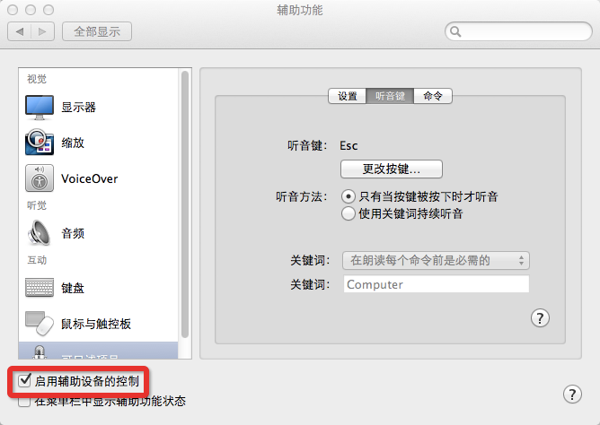

什么是AppleScript
AppleScript是Mac系统提供的一个脚本语言，这个脚本语言简单易读，稍微懂一点脚本语言就可以快速学会了。AppleScript可以让我们的日常工作流程化，简化繁琐的固定输入，自动化完成一般的日常工作。 AppleScript提供了很多很多强大的功能，本文就只简单的介绍一下如何用它来实现类似Windows下按键精灵的功能。
前提工作
如果想要让AppleScript自动帮我们按键，点击鼠标。首先还是要在设置里“启用辅助设备的控制”，否则AppleScript就没有权限控制我们的键盘、鼠标这些辅助设备。 打开“系统偏好设置”->“辅助功能”页面，然后勾选“启用辅助设备的控制”。
